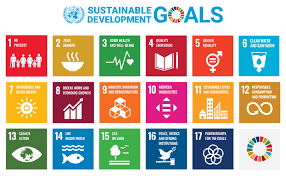

Kerja sama Bilateral Kerja sama bilateral adalah jenis kerja sama yang terjadi antara dua negara/pihak dan saling menguntungkan satu sama lain. Biasanya kerja sama bilateral dilakukan antara negara dengan negara lain yang memiliki hubungan diplomatik. Kerja sama ini terjadi setelah kedua negara menandatangani persetujuan yang akan dijadikan acuan. Contoh kerja sama bilateral antara Indonesia dan negara lain:
Semua tujuan tersebut saling terkait dan mendukung untuk mengatasi berbagai tantangan global yang kita hadapi. Tujuan SDGs adalah untuk melakukan perubahan bagi masa depan yang lebih baik, mempromosikan pembangunan berkelanjutan, menjaga lingkungan, memerangi ketidaksetaraan, dan memastikan kehidupan yang layak bagi semua orang. Tindakan kecil dari kita semua dan dibantu dengan program SDGs, semua orang dapat berkontribusi dalam menciptakan perubahan yang positif untuk dunia kita bersama.
